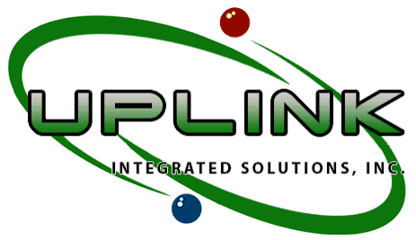
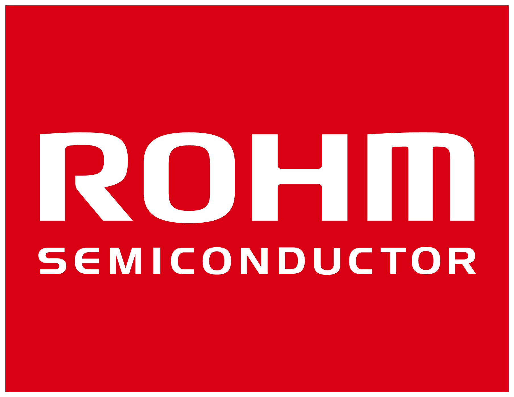
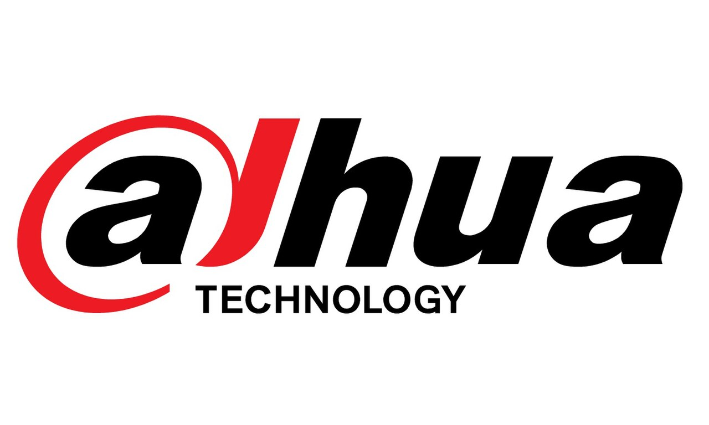
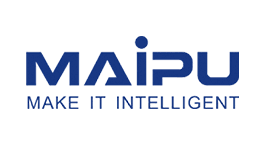
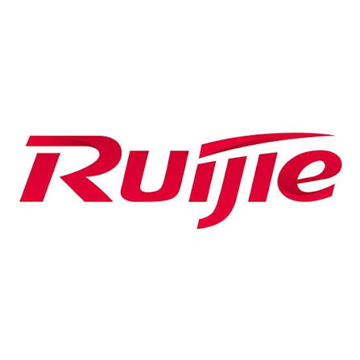
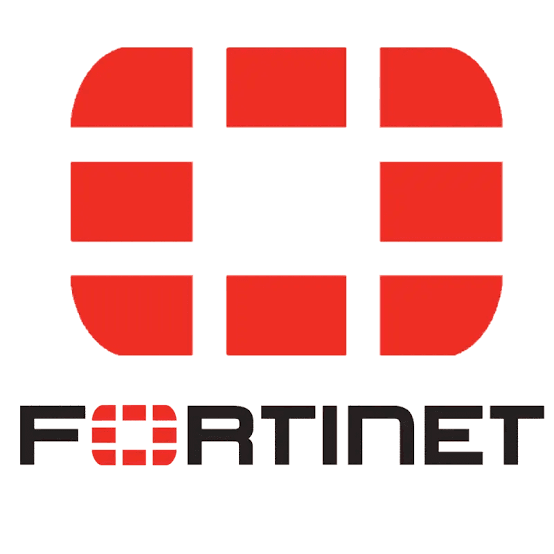

2026
Personal CV Website
Designed and built this site from scratch — a static version hosted on GitHub Pages, plus a Laravel build with a database-backed admin panel for editing content without touching code.
Connecting technology
for a smarter tomorrow
Hi, I'm
Electronics & Network Engineer
I design, build, and maintain technology solutions that bring hardware, software, and network infrastructure together — from citywide surveillance backbones to environmental and structural monitoring platforms.
Electronics engineer with a background in network engineering, embedded systems, IoT, and systems integration. I design, build, and maintain technology solutions that bring hardware, software, and network infrastructure together — from citywide surveillance backbones to environmental and structural monitoring platforms.
My work spans network infrastructure deployment, industrial and AV communication systems, sensor-based monitoring, embedded development, and enterprise system integration, with a consistent focus on solutions that are scalable, secure, and built to last. I'm continually expanding into emerging technologies — most recently autonomous UAV systems and structural health monitoring — and I'm open to collaborating on work in network engineering, IoT, embedded systems, industrial automation, and environmental monitoring.
Sep 2025 — Present

May 2025 — Sep 2025
Jun 2023 — Jun 2025
Aug 2022 — Jun 2023
Aug 2021 — Aug 2022
Jun 2020 — Jul 2021

May 2018 — Aug 2018

A selection of recent systems I've designed, integrated, and delivered.
May 2026 — Present
Designed and integrated a seismic accelerograph monitoring system for continuous ground motion and structural vibration monitoring — sensors, data acquisition, communications, and a centralized dashboard with real-time data, event recording, and alarms.
May 2026 — Present
Apr 2026 — Present
Mar 2026 — May 2026
2026 — Present
Feb 2025 — Jun 2025
Mar 2026 — Apr 2026
Things I've built on my own time.
2026
Designed and built this site from scratch — a static version hosted on GitHub Pages, plus a Laravel build with a database-backed admin panel for editing content without touching code.

Dahua Certified Security Expert VSOL Certified ICT Associate
VSOL Certified ICT Associate
Maipu Certified Network Professional
Ruijie Specialist Engineer
Fortinet NSE 2 — Network Security Expert, Certified Associate COSH — Safety Officer 2
COSH — Safety Officer 2 Interference Isolation & Tracking
Interference Isolation & Tracking Advanced Spectrum Analyzer
Advanced Spectrum Analyzer Frequency Scanning Best Practices
Frequency Scanning Best Practices Wireless Telecom Spectrum
Wireless Telecom Spectrum Wireless LAN Masterclass
Wireless LAN Masterclass Electronic Technician
Electronic Technician Electronic Engineer
Electronic Engineer2014 — 2019
Open to collaborating on network engineering, IoT, embedded systems, industrial automation, and environmental monitoring projects.